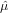

HelioPlot, and the treatment of
overdispersed (U-Th-Sm)/He data
Abstract
More often that not, (U-Th-Sm)/He ages are overdispersed with respect to the formal analytical uncertainty. The Mean Square of the Weighted Deviates (MSWD) is a useful tool for assessing the amount of overdispersion. If the MSWD is significantly greater than one, the ages can be parameterised by a (log)normal distribution with two sources of variance, which can be iteratively solved using the method of maximum likelihood. The overdispersion of replicate (U-Th-Sm)/He ages is caused by the overdispersion of the underlying U-Th-Sm-He compositions, the geometric mean of which gives rise to the so-called ‘central age’. These compositions can be normalised to unity and parameterised by a multivariate logistic normal distribution with two sources of variance, which can be iteratively solved by a multivariate generalisation of the aforementioned age-averaging algorithm. Exact and asymmetric confidence intervals for the central age are obtained using a deterministic Bayesian algorithm. HelioPlot is a Java application developed for the purpose of plotting U-Th-(Sm)-He data on ternary diagrams and logratio plots that implements all these calculations. The program can be downloaded from http://pvermees.andropov.org/helioplot.
1 Introduction
Measuring several single grain U-Th-(Sm)-He aliquots per sample is not only possible, thanks to the development
of laser heating (House et al., 2000), but also desirable, because U-Th-(Sm)-He data are generally
overdispersed with respect to the formal analytical uncertainty and this overdispersion can only be
quantified by analysing a representative number of mineral grains. The question then arises how to average
these measurements. Traditionally, this is done by simply averaging the single grain age estimates, an
ad hoc solution that lacks a proper theoretical justification and does not make full use of the data.
Potentially valuable information is lost when the chemical composition of samples is ignored, and
compositional controls on thermochronological models may go unnoticed. The most natural way to
study U-Th-(Sm)-He data is as a geochemical composition on a ternary diagram or in logratio space
(Vermeesch, 2008).
HelioPlot is a data visualisation tool that plots U-Th-(Sm)-He data on ternary diagrams and logratio plots. The program also calculates the so-called ‘central age’, which is the age corresponding to the geometric mean U-Th-(Sm)-He composition. To this end, it applies a weighted mean algorithm taking into account both the analytical uncertainty and any possible overdispersion simultaneously, in contrast with Vermeesch (2008)’s web calculator, which propagated them separately. U-Th-(Sm)-He data are often overdispersed with respect to the analytical uncertainty, for reasons that have been discussed elsewhere (Fitzgerald et al., 2006; Shuster et al., 2006). The amount of overdispersion can be quantified using the Mean Square of the Weighted Deviates (MSWD, McIntyre et al., 1966). Given a dataset of n age measurements, or the logarithms thereof (ti, for 1≤i≤n), the MSWD is a measure of the ratio of the observed scatter of the data points (ti) around the mean value () to the expected scatter from the assigned errors (σi):
|
| (1) |
If the assigned errors are the only cause of scatter, the MSWD will tend to be near unity. MSWD values much
less than unity indicate either overestimated analytical errors or unrecognized error-correlations. MSWD values
much greater than unity generally indicate either underestimated analytical errors, or the presence of non-analytical
scatter. HelioPlot implements methods to deal with the latter situation.
Although there is no formally agreed convention for calculating the average of multiple (U-Th)/He ages, this is either done by computing the unweighted arithmetic mean, ignoring the analytical precision, or by calculating the error-weighted mean, ignoring overdispersion. Section 2 introduces a one-dimensional weighted mean algorithm that deals with analytical precision and overdispersion simultaneously, using the method of maximum likelihood. Section 3 generalises this method to compositional data space, so as to calculate the best estimate for the central age, taking into account both the internal and external reproducibilities of the data, as well as their full covariance structure. ‘Conventional’ propagation of uncertainty for the central age, as implemented by Vermeesch (2008), involves linearisation by a first-order Maclaurin series expansion, which may be inaccurate. Section 4 proposes a deterministic algorithm to avoid this problem, yielding exact confidence intervals for the central age. Finally, Section 5 provides further details about HelioPlot and illustrates its usefulness with a number of real world examples.
2 Overdispersed ages
Assume that the ages (or the logarithm of the ages) come from a normal distribution of the form
 | (2) |
where μ denotes the mean and ξ2 is the amount of overdispersion, i.e. the excess scatter that cannot be explained
by the analytical uncertainty alone. Unbiased estimates  and  2 for these two parameters can be obtained by
maximising the likelihood l:
2 for these two parameters can be obtained by
maximising the likelihood l:
|
| (3) |
or, more conveniently, the log-likelihood L ≡ log(l):
|
| (4) |
Calculating the derivatives of L with respect to  and
and  2 and setting them to zero to find the maximum
likelihood:
2 and setting them to zero to find the maximum
likelihood:
 = ∑
i=1n = ∑
i=1n = 0 = 0 | (5) | |
 = ∑
i=1n = 0 = ∑
i=1n = 0 | (6) |
which can be solved iteratively for  and
and  2. The variance
2. The variance  μ2 of the weighted mean
μ2 of the weighted mean  is given by the inverse of
the Fisher Information, i.e. the negative expected value of the second derivative of the log-likelihood function with
respect to
is given by the inverse of
the Fisher Information, i.e. the negative expected value of the second derivative of the log-likelihood function with
respect to  :
:
|
| (7) |
3 Overdispersed compositions
U, Th and He form a ternary system, can be plotted on a ternary diagram, and are subject to the peculiar mathematics of the ternary dataspace. The ‘central age’ is calculated from the geometric mean composition of a U-Th-(Sm)-He dataset and is a more accurate estimator of the true age than the arithmetic mean (Vermeesch, 2008). This concept can be easily generalised to four dimensions and this section will, therefore, discuss the case of (U-Th-Sm)/He dating. Given n single grain measurements [Ui, Thi, Smi, Hei] (1≤i≤n), the calculation of a central age involves a bijection from the four-dimensional ‘simplex’ to a three-dimensional Euclidean logratio-space (Aitchison, 1986; Vermeesch, 2008):
|
| (8) |
The central age is obtained by calculating the average logratio composition (v, w, x) and converting it to a geometric mean composition using the inverse logratio transformation:
|
| (9) |
This result is then plugged into the U-Th-(Sm)-He age equation.
The problem of averaging the compositions is very similar to the problem of averaging the ages discussed in the previous section. Given n logratio measurements Xi and their (co)variances Ei (1 ≤ i ≤ n):
![vi σ2vi covvi,wi covvi,xi
Xi ≡ [wi ] and Ei ≡ [covvi,wi σ2wi covwi,xi]
xi covvi,xi covwi,xi σ2xi](MLEpaper320x.png) | (10) |
our aim is to develop an algorithm to calculate the weighted mean M and its covariance matrix Σ:
![-
v- σ2v covv,w- covv,x
M ≡ [ w-] and Σ ≡ [covv,w σ2w- covw,x ]
x covv,x covw,x σ2x](MLEpaper321x.png) | (11) |
In principle, the logratio covariances (Ei) could be directly determined from the raw mass spectrometer measurements. In practice, however, they are calculated from the individual concentrations by linear approximation, using Equation 21 of Vermeesch (2008), which assumes that the errors on the individual concentrations are Normal and independently distributed. Rather than propagating the internal and external uncertainties separately, as done by Vermeesch (2008), this section introduces a weighted mean algorithm that considers both factors simultaneously, using a multivariate generalisation of the one-dimensional maximum likelihood algorithm developed in Section 2. First, redefine the MSWD in matrix form:
![1-∑n i ′ i-1 i
M SW D = df (X - M ) [E ] (X - M )
i=1](MLEpaper322x.png) | (12) |
where df = d × (n - 1) is the number of degrees of freedom of the problem, with d = 2 for (U-Th)/He and d = 3 for (U-Th-Sm)/He dating. Note that, because the variability of Sm does not contribute as much to the age dispersion as that of U and Th, it is better to use only the latter two elements for the MSWD calculation. If MSWD ≫ 1, the data are overdispersed and, in analogy with Equation 2, we will assume that the observations come from a multivariate normal distribution of the form
|
| (13) |
where M denotes the mean and Ξ is the overdispersion. The log-likelihood is given by:
|
| (14) |
 and
and  can be found by solving the following system of non-linear equations:
can be found by solving the following system of non-linear equations:
 = ∑
i=1n[(Ei + = ∑
i=1n[(Ei +  )-1(Xi -)] = 0 )-1(Xi -)] = 0 | (15) | |
 = ∑
i=1n[(Ei + )-1(Xi - = ∑
i=1n[(Ei + )-1(Xi - )(Xi - )(Xi - )′(Ei + )′(Ei +  )-1 - (Ei + )-1 - (Ei +  )-1] = 0 )-1] = 0 | (16) |
The covariance matrix of the weighted mean is obtained by inverting the Fisher Information matrix, i.e. the matrix of the negative expected values of the second derivatives of the log-likelihood function:
![∑n
ˆΣ = [ (Ei +Ξˆ)- 1]-1
i=1](MLEpaper338x.png) | (17) |
4 Confidence intervals
Using the covariance matrix of the logratio average (), and performing a linear error propagation, it is
straightforward to calculate the covariance matrix of the geometric mean composition (), evaluated at
 :
:
 | (18) |
where A is the matrix of first derivatives of Equation 9:
![∂U-- ∂Th ∂Sm- ∂He
∂∂Uv- ∂∂vTh ∂∂Svm- ∂∂vHe
A = [ ∂w∂U-- ∂∂wTh ∂∂Swm- ∂∂wHe ] ˆM
∂x ∂x ∂x ∂x](MLEpaper343x.png) | (19) |
Equation 18 contains an expression for the covariances of the geometric mean composition, which were omitted
by Vermeesch (2008) but are required for a full propagation of age uncertainty. However, even the complete error
propagation may be inaccurate because it is based on a first order Maclaurin series expansion of Equation 9,
which is highly non-linear. This problem can be circumvented using numerical techniques, such as the
following deterministic algorithm. First, build a regular grid across the two (for U-Th-He) or three (for
U-Th-Sm-He) dimensions of logratio space (Figure 1.a). Second, for each of these grid points, calculate
(a) its likelihood under a normal distribution with mean  and covariance matrix
and covariance matrix  , and (b) the
corresponding age. Third, calculate the Bayesian cumulative posterior distribution by ranking the numerical
data in order of increasing age and computing the running sum of the likelihoods. Fourth, obtain an
asymmetrical 95% confidence interval from the 2.5 and 97.5 percentiles of the posterior distribution (Figure
1.b).
, and (b) the
corresponding age. Third, calculate the Bayesian cumulative posterior distribution by ranking the numerical
data in order of increasing age and computing the running sum of the likelihoods. Fourth, obtain an
asymmetrical 95% confidence interval from the 2.5 and 97.5 percentiles of the posterior distribution (Figure
1.b).
5 Applications
HelioPlot is a computer program for visualising U-Th-(Sm)-He data on ternary diagrams and logratio
plots that implements all the above calculations, including the computation of central ages and 95%
confidence intervals. Equations 6 and 16 are solved using Newton’s method. HelioPlot was written
in Java and is, therefore, perfectly platform independent. The program and its source code can be
downloaded free of charge from http://pvermees.andropov.org/helioplot. Data can be copied and
pasted to-and-from Microsoft Excel, or entered directly using the built-in editing tools. Data files are
saved in a comma-separated-variable (.csv) format. Samarium is an optional input parameter and the
complete functionality of the program is still available when Sm is missing. If Sm is absent, it will be
assumed to be zero, and the data naturally reduce to their two dimensions in compositional datapace. If
Sm is present, the geometric mean Sm composition is used as a common reference for the ternary
diagrams and logratio plots. Colour is used to visualise the Sm content of aliquots, or any other numerical
quantity, such as sample number (Figure 2.a), grain size (Figure 2.b), elevation, or, for the case of
double-dated grains, a U-Pb or fission track age (Campbell et al., 2005). HelioPlot is capable of
saving the graphical output as either bitmap or vector images, in a .png or .pdf format, respectively.
Example input files are provided on the website for testing purposes. Figure 2.b shows the output for one of these files, based on a published (U-Th)/He dataset (Vermeesch et al., 2007), which was α-ejection corrected according to the guidelines of Ketcham (2009). The output includes the arithmetic and geometric mean ages and their standard errors, calculated using the methods of Section 2, in addition to the central age, its standard error and 95% confidence interval, calculated according to the algorithm of Section 3. Three separate MSWDs are given, reflecting the overdispersion of the ages and the U-Th-He compositions.

 , He* =
, He* =  ). (b) Logratio plot of U-Th-He data from Naxos
(Vermeesch et al., 2007), colour-coded according to grain size. The geometric mean composition is shown
as a white ellipse.
). (b) Logratio plot of U-Th-He data from Naxos
(Vermeesch et al., 2007), colour-coded according to grain size. The geometric mean composition is shown
as a white ellipse.
6 Conclusions
The aim of this paper was to bring the statistical treatment of U-Th-(Sm)-He data on an equal footing with more established geochronometers such as U-Pb, 40Ar/39Ar, or fission tracks. Weighted least squares algorithms similar to the maximum likelihood methods of Sections 2 and 3 have been used in U-Pb (Ludwig, 1998) and fission track dating (Galbraith and Green, 1990). Visual aids such as the U-Pb concordia diagram, the Rb-Sr isochron, or the fission track radial plot can be very useful for the exploratory analysis of geochronological data. The ternary diagram and logratio plot play the same role for helium thermochronology, as they bring out the full information content of U-Th-(Sm)-He data, and can help to reveal patterns between aliquots and samples that may not be seen otherwise.
Acknowledgments
John Rudge formulated equation 13, from which the rest of the calculations followed naturally. He and an anonymous reviewer are gratefully acknowledged for this and other constructive comments.
References
Aitchison, J., 1986. The statistical analysis of compositional data. London, Chapman and Hall.
Campbell, I. H., Reiners, P. W., Allen, C. M., Nicolescu, S., Upadhyay, R., Sep. 2005. He-Pb double dating of detrital zircons from the Ganges and Indus Rivers: Implication for quantifying sediment recycling and provenance studies. Earth and Planetary Science Letters 237, 402–432.
Fitzgerald, P. G., Baldwin, S. L., Webb, L. E., O’Sullivan, P. B., 2006. Interpretation of (U-Th)/He single grain ages from slowly cooled crustal terranes: A case study from the Transantarctic Mountains of southern Victoria Land. Chemical Geology 225, 91–120.
Galbraith, R. F., Green, P. F., 1990. Estimating the component ages in a finite mixture. Nuclear Tracks and Radiation Measurements 17, 197–206.
House, M. A., Farley, K. A., Stockli, D., Dec. 2000. Helium chronometry of apatite and titanite using Nd-YAG laser heating. Earth and Planetary Science Letters 183, 365–368.
Ketcham, R., 2009. Refinements for alpha stopping distances and FT corrections. OnTrack, the electronic newsletter of the international thermochronology community 16.
Ludwig, K. R., Feb. 1998. On the treatment of concordant uranium-lead ages. Geochimica et Cosmochimica Acta 62, 665–676.
McIntyre, G. A., Brooks, C., Compston, W., Turek, A., 1966. The Statistical Assessment of Rb-Sr Isochrons. Journal of Geophysical Research 71, 5459–5468.
Shuster, D. L., Flowers, R. M., Farley, K. A., Sep. 2006. The influence of natural radiation damage on helium diffusion kinetics in apatite. Earth and Planetary Science Letters 249, 148–161.
Vermeesch, P., 2008. Three new ways to calculate average (U-Th)/He ages. Chemical Geology 249, 339–347.
Vermeesch, P., Seward, D., Latkoczy, C., Wipf, M., Günther, D., Baur, H., 2007. α-Emitting mineral inclusions in apatite, their effect on (U-Th)/He ages, and how to reduce it. Geochimica et Cosmochimica Acta 71, 1737–1746.